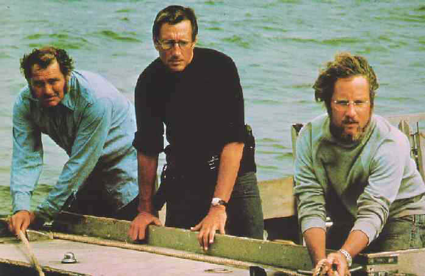

Review: Jaws
*This article was first published on another blog back in 2012, presented here slightly edited*The other day I went down to my somewhat local cinema in North London and sat down to watch a new restoration of Jaws (Spielberg/1975).

This is a huge deal for me, not just going to the movies but rather seeing Jaws on the big screen. Being an unashamed fan of Blockbuster spectacle films I was hugely excited to see what is commonly regarded as the first modern Blockbuster and considered to be a real turning point in cinematic entertainment. There had of course been movies prior to Jaws that loads of people went down in their droves and packed streets to see, but Jaws brought about our whole mega popcorn-stuffing, coke-guzzling bombastic movie culture, a movement that would of course go on to be taken into overdrive two years later by Star Wars (Lucas/1977).
It's always struck me as odd though how Jaws holds this place in movie history, because when compared to most other blockbuster type fair it's actually quite an understated subdued film, with at some times a very slow pace and some truly excellent cinematography. As the movie begins it all kicks off like a wonderfully crafted and suspenseful horror movie with many nods to that particular genre. For instance, Horror film fans will instantly recognise the first half of the name of the film's fictional setting, Amity Island. Yes I will admit, it does in the first half briefly dabble in being an all-out monster movie but for the most part what you're treated to is a lot of small town politics and general small town based humour, some amateur oceanographic studies, and some genuinely touching family scenes all equipped with a surprisingly great deal of depth.
In the first couple of acts the movie does of course have to tell the story of a massive shark terrorizing a small town because that is after all it's main purpose, but alongside that it also tells a well constructed story of Amity Island's Government fighting basic ethics against tourist demand to keep itself financially afloat (*2020 edit* How prescient are those themes now?!) how the shark attacks impact the local community, and how a big-city cop and his young family adjust to small town life and all that entails. These elements, bought in at the beginning of the movie, are what start to set Jaws apart from most monster movies or scary movies in general. In it's opening acts Jaws establishes itself a very believable and engaging backdrop for the attacks, and setting all this in such an environment makes the whole scenario all the more relatable for the viewer and of course in-turn all the more a scary experience, or even beyond that, a downright terrifying trip to the cinema.
The story of the movie is moved along most by three major characters (well four if you count The Shark), and the primary acting trio portraying those characters are all absolutely incredible. First, we are introduced to Police Chief Brody (Roy Schieder, rip) and it's not fully explained why he left New York to move to Amity and run the island as it were - I always assumed it was a promotion to a higher position in a smaller district - but with the Shark Attacks he is confronted by something far out of his depth (no pun intended), far beyond the usual petty theft and 'neighbour's trees encroaching over boundaries cases' he is used to. Roy Schieder plays this role in the start of the movie masterfully, he is clearly not entirely sure of himself but at the same time very aware and proud of his authority within the community. His overall interaction with the inhabitants of Amity Island is portrayed by Schieder with such an ingenious balance of disdain and humility. In his heart of hearts he's a big city New Yorker but duty always outweighs those feelings and even deeper than that he always knows what he has to do.
This commitment to duty and high skill in his job makes Brody come to the realisation that he is truly in need of proper mainland/outside world help so he calls the Oceanographic Institute and we are next introduced to Matt Hooper (Richard Dreyfuss, who would go on to be used later again by Spielberg in the also excellent Close Encounters of the Third Kind), a young Marine Biologist who at first seems as if he's probably done a lot more theory at a desk than practical field work in his career so far.
There's a particular scene, after the town goes Shark Hunting Mad (which I'll go more into later) and a tiger-shark is caught, in which Brody and Hooper are given permission to do an autopsy on the captured beast to inspect what it has digested and prove whether or not it is indeed the town's aquatic serial killer. During the procedure Dreyfuss/Hooper is seen gagging at the smell of the Shark innards and completely disgusted by what he's seeing. Acting wise he's not only illustrating his inexperience as a Marine Biologist but he's also directly echoing the feelings of the viewer and bringing us into the movie. He thinks it's disgusting and so do we, and with this imagery on the screen we can imagine the smell. Matt Hooper/Richard Dreyfuss in that moment is representing the outside observer in the story, which is rather extensionally us, so in some small way we become a part of the movie. There are just so many powerful things about this scene and Hooper's character in general. I love it when a character or an element in a movie does this and this is one of the best examples of this technique that I can think of in movie history. It's simply impeccable visual storytelling.
Back to the story for the second: the fallout from the Shark Attacks coupled with the Mayoral office's need for a bumper beach season all culminate in a local town meeting, where its The People versus The Council discussing the issue and hopefully agreeing upon a solution. As is so often the case this quickly erupts into a shouting match and the room is silenced by our third introduction in the Jaws cast trinity, a deafening scratch on the chalkboard by the lovably eccentric, Quint.
At this stage we don't know an awful lot about Quint, but in a brief community exchange we find out that he his known by the Mayor as a local celebrity, some say he is a hermit-like recluse, and in other circles he's a fishing legend.He offers to find and kill the shark at a price and the mayor responds to this by announcing a reward for the beast's capture and makes this available to all local fishermen. Hence the whole going Shark Hunting Mad thing I eluded to earlier. After the tiger-shark is caught and exposed for what it isn't, Brody convinces the Mayor to commission Quint to go on a proper Shark Hunting expedition. We are quickly shown Quint's house which cleverly visually illustrates that this guy is the real deal, and Brody decides he should go along to rein Quint in and also decides to bring along Hooper for some real scientific expertise. So the three of them set off out to sea and all of this expository plot babble I've been doing sets up my favourite part of the film and arguably the best Third Act in cinematic history.
This third act is now what truly sets Jaws apart from just about any other movie I can think of. It's just completely indescribable but I am going to attempt to do so anyway. I don't know what genre it makes the movie become but in truth I don't really even care, I just love this part of the movie so much. I love the three characters getting to know each other more, I really love the scar swapping stories and the seriously bone chilling monologue that follows and I am always blown away by the insanely clever use of the barrels to represent the shark. Just the simple scenes of the boat being driven and being tended to, or Quint constructing his fishing apparatus make this whole sequence seem almost zen like, only with an ever present undercurrent of extreme suspense. It all thematically serves to strip the movie all the way down to it's bare roots: it's not the perils of a town versus a shark anymore; it is just a trio of men taking on a formidable adversary, which then ultimately becomes simply, and exactly as it should do, just a one-on-one contest - Man versus Shark.
During this almost hour long act we are never shown or even told about any of the townspeople anymore, in fact we never see any of the other supporting characters again, the movie ends with two of the main cast still at sea on their way back to land. Jaws in it's third act becomes just about the three characters we cared about in the first place (again, four if you count the Shark) and I really wish more movies would do this. It is this movie's equivalent of the leader and remaining hero confronting his nemesis in Predator (McTiernan/1987), John McClane just ending up on the top floor of the building to confront Hans Gruber in Die Hard (McTiernan/1989), or, after everything that has come to pass, The Hobbits farewelling dear Frodo on the shores of The Grey Havens (The Lord of The Rings, Jackson - 2001-03). But like so many things about this movie, this is in my opinion cinema's best example of this narrative structure. It's so wonderfully elongated and so uniquely engaging. I can't express enough, or even adequately find the words to describe, how well this works and how it so brilliantly serves the story.
Jaws was an incredible trip to the cinema for me. I had loved it for years but now I think I love it even more. I always try to do this with movies of my youth which I only ever saw on a small screen: In 1997 I saw Star Wars (in it's first of many revisions), back in 2001 I rather appropriately saw 2001 (Kubrick/1968), and then when both ET (Spielberg/1982) and I turned 20 in 2002 I took my little brother to see it, sadly with the now infamous lack of swear words and gun replacing walkie-talkies.
This game changing monster-movie blockbuster with oh so much more on offer is one of my favourite movies ever and without any shred of hesitation it fully deserves...
Five Shark Bites Out Of Five
Gosh I went through this whole review and didn't even go into the film's visual effects. So in short: the shark looks awesome. In theaters now (in the UK at least) *Well, it was in theaters back when I first wrote this article*